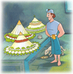
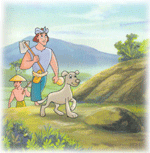
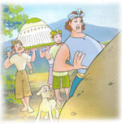

Asal Mula Bukit Catu
( Cerita Rakyat Bali )
Alkisah di pedalaman Pulau Bali, terdapat sebuah desa yang subur dan makmur. Di desa tersebut tinggal seorang petani bernama Pak Jurna dan istrinya. Mereka menginginkan hasil panen padinya lebih banyak dari pada hasil panen sebelumnya. "Hem, sebaiknya pada musim tanam padi sekarang ini kita berkaul," usul Pak Jurna pada istrinya. "Berkaul apa, pak?" sahut Bu Jurna. "Begini, jika hasil panen padi nanti meningkat kita buat sebuah tumpeng nasi besar, ujar Pak Jurna penuh harap. Ibu Jurna setuju.
Ternyata hasil panen padi Pak Jurna meningkat. Sesuai dengan kaul yang telah diucapkan, lantas Pak Jurna dan istrinya membuat sebuah tumpeng nasi besar. Namun Pak Jurna dan istrinya belum puas dengan hasil panen yang mereka peroleh. Mereka ingin berkaul lagi dimusim padi berikutnya. "Sekarang kita berkaul lagi. Jika hasil panen padi nanti lebih meningkat, kita akan membuat tiga tumpeng nasi besar-besar," ujar Pak Jurna yang didukung istrinya. Mereka pun ingin mengadakan pesta yang lebih meriah daripada pesta sebelumnya.
Ternyata benar-benar terjadi. Hasil panen padi lebih meningkat lagi. Pak Jurna dan istrinya segera melaksanakan kaulnya. Sebagian sisa panen dibelikan hewan ternak oleh Pak Jurna. Tapi mereka masih belum puas. Pak Jurna dan istrinya berkaul lagi akan membuat lima tumpeng besar jika hasil panen dan ternaknya menjadi lebih banyak. Panen berikutnya melimpah ruah dan ternaknya semakin banyak. "Suatu anugerah dari Sang Dewata, apa yang kita mohon berhasil," ucap Pak Jurna datar.
Di suatu pagi yang cerah, Pak Juran pergi ke sawah. Sewaktu tiba di pinggir lahan persawahan, ia melihat sesuatu yang aneh. "Onggokan tanah sebesar catu?" tanyanya dalam hati. "Perasaanku onggokan tanah ini kemarin belum ada," gumam pak Juran sambil mengingat-ingat. Catu adalah alat penakar beras dari tempurung kelapa. Setelah mengamati onggokan tanah itu, pak Jurna segera melanjutkan perjalanan mengelilingi sawahnya. Setelah itu, ia pulang ke rumah. Setibanya di rumah, pak Jurna bercerita pada istrinya tentang apa yang dilihatnya tadi. Ia segera mengusulkan agar membuat catu nasi seperti yang dilihat di sawah. Ibu Jurna mendukung rencana suaminya. 
"Begini, pak. Kita buat beberapa catu nasi. Dengan begitu, panenan kita akan berlimpah ruah, sehingga dapat melebihi panenan orang lain," usul Bu Jurna.
Hasil panen berlimpah ruah. Lumbung padi penuh. Para tetangga Pak Jurna takjub melihat hasil panen yang tiada bandingnya itu. "Pak Jurna itu petani ulung," kata seorang lelaki setengah baya kepada teman-temannya. "Bukan petani ulung tetapi petani beruntung," timpal salah satu temannya sambil tersenyum. Pak Jurna dan istrinya membuat beberapa catu nasi. Pesta pora segera dilaksanakan sangat meriah. Beberapa catu nasi segera dibawa ke tempat sebuah catu yang berupa onggokan tanah. Namun, Pak Jurna sangat terkejut melihat catu tersebut bertambah besar.
"Baik, aku akan membuat catu nasi seperti catu tanah yang semakin besar ini," tekad Pak Jurna bernada sombong. Pak Jurna segera pulang ke rumah dan memerintahkan istrinya agar membuat sebuah catu nasi yang lebih besar.
Sebuah catu nasi yang dimaksud telah siap dibawa ke sawah. Pak Jurna membawa catu nasi besar. Namun setelah tiba ditempat, Pak Jurna terperanjat. "Astaga! Catu semakin besar dan tinggi!" pekiknya. "Tak apalah. Aku masih mempunyai simpanan beras yang dapat dibuat sebesar catu ini," ujar Pak Jurna tinggi hati. Begitulah yang terjadi. Setiap Pak Jurna membuat catu nasi lebih besar, onggokan tanah yang berupa catu bertambah besar dan semakin tinggi. Lama kelamaan catu tanah tersebut menjadi sebuah bukit.
Pak Jurna dan istrinya pasrah. Mereka sudah tidak sanggup lagi membuat catu nasi. Lantas apa yang terjadi? Pak Jurna jatuh miskin karena ulah dan kesombongannya sendiri. Akhirnya, onggokan tanah yang telah berubah menjadi bukit itu dinamai Bukit Catu.